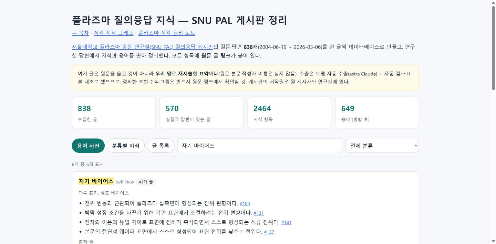
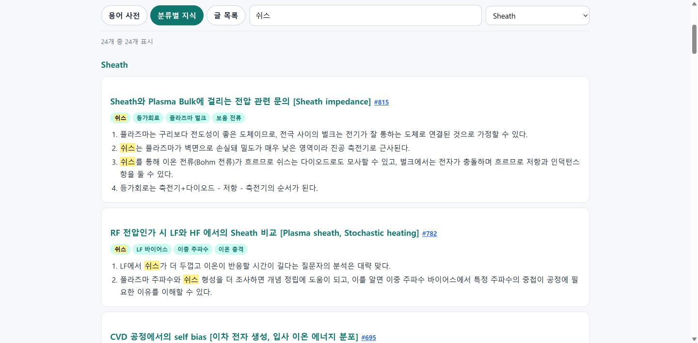

#40
SNU PAL 질의응답 게시판 838개 글 데이터베이스화 · 지식·용어 추출
지시 (원문)
"https://snupal.snu.ac.kr/qna/list/"
위 링크에는 식각 플라즈마와 관련된 총 838개의 질문 및 답변이 있는 게시판이다.
위 글들의 내용을 하나씩 데이터베이스화 하고 이로부터 지식 및 용어들을 추출하여 정리. 단, 출처 링크를 함께 저장할 것.
이어진 지시 (2026-10-10 12:15): "작업 재개"
분석 (Claude의 정리)
- 서울대 플라즈마 응용 연구실의 공개 질문·답변 게시판. 글마다 본문·답변을 데이터베이스로 저장하고, 연구실 답변에서 지식과 용어를 뽑아 원문 링크와 함께 정리한다.
- 원문은 게시자·연구실의 저작물이고 질문자 이름은 개인정보 → 원문 전체·이름은 로컬 DB에만, 공개 사이트에는 재서술한 지식·용어 + 원문 링크만 싣는다. 수집은 robots.txt 확인 후 1초 간격으로.
- 질문자의 추측·오해가 지식으로 섞이지 않도록 연구실 답변에서만 지식을 뽑는다.
과정
- robots.txt 확인(전체 허용), 목록·본문 HTML 구조 확인: 목록 34쪽, 글마다 분류·제목·작성일·본문, 답변은 댓글.
- jev 자문 5건: 새 10단계로 분리 (선택 b, 0.94) · 공개 범위 → 재서술 지식·용어 + 원문 링크, 원문·이름 비공개 (b, 1.00) · 추출 → astra 배치 병렬 + Claude 표본 검증 (a, 1.00) · 기존 용어집·그래프에 바로 합치기 → 0.32(아니오, 별도 페이지 먼저) · 멈춘 #39를 이 작업 뒤 마무리 → 0.49. 모두 반영 (#39는 수집을 기다리는 동안 이어서 마무리).
- 수집기
tools/snupal_crawl.py작성 → 목록 838개 전부 수집(게시판 표시 개수와 일치). 본문 수집은 백그라운드(글당 약 2.5초, 20:37 완료). - astra 시범 추출 10개(약 2분): 형식 정상. 그런데 옛 글 중 연구실이 직접 올린 글(본문이 곧 답변, 187개)을 "답변 없음"으로 처리 → 내보내기에 글쓴이 역할 표시, 지시문 보강.
- 병합·검사 도구
snupal_merge.py(누락·이름 노출·원문 복사 검사), 페이지 생성기snupal_page.py작성. 이름 검사가 닉네임 "플라"를 "플라즈마"에서 찾는 오탐 → 여러 글 본문에 흔한 단어인 닉네임은 제외. - 수집된 앞부분부터 astra 배치(50개씩) 3개 병렬 시작. 20:32 첫 150개 검사: 누락·이름 노출·복사 0. 표본 대조 4개(Claude가 원문 답변과 비교): 모두 답변 내용과 일치, 추가 내용 없음, 조건 보존.
- 수집 완료: 글 838, 댓글 1,032, 기간 2004-06-19 ~ 2026-03-06. 답변자 확인: 교수·"PAL Archive"(이관 계정)·관리자 외에, 답변에서 스스로 연구실 학생이라 밝힌 1명은 연구실 답변으로 포함, 회사원·독학자 등 다른 이용자 답변은 지식에서 제외 (이미 추출한 해당 글 3개는 다시 추출).
- astra 사용량 한도에 걸림(10-10 01:00까지). 300개 완료·538개 남음. jev 자문: 나머지는 Claude를 별도 headless 실행(같은 지시문·형식, 파일 읽기만 허용)으로 지금 추출하고 글마다 추출 모델 기록 (선택 c, 0.96) · 페이지에 글별 모델 표시 → 0.30(아니오, 방법 절에만 기재). 반영. 시험 추출에서 "Paschen"을 "패션 곡선"으로 쓴 오기 발견 → 병합 단계에서 표기 고침.
- "답변 없음"이 56개로 많아 조사 → 수집기 결함: 옛 게시판에서 이관된 글 234개는 댓글 자리에 빈 "댓글 0"만 있고 질문·답변이 본문에 함께 들어 있음. 실행 중이던 추출을 멈추고, 내보내기에 "이관 글" 표시·빈 댓글 제거, 지시문에 "본문의 '답변' 뒤는 연구실 답변" 규칙 추가. 이미 추출한 글 중 영향받은 34개 재추출.
- Claude 추출 완료. 문제 3건: 배치 09는 멈춘 실행이 옛 입력으로 늦게 써 둔 결과 → 다시 추출, 배치 16·17은 출력이 줄 단위가 아니라 0개로 읽힘 → 로그를 다시 파싱해 50·38개 복구, 배치 14·15의 중복 줄은 적재 시 하나로.
- (10-10, "작업 재개") 전체 적재·검사. 검사가 12분 넘게 끝나지 않음 → 원인: 긴 문자열 유사도 비교와 이름마다 정규식 재컴파일 → 30자 조각 대조·정규식 1회 컴파일로 바꿔 4초. 이름 오탐("프로브로" 속 닉네임) → 앞 글자가 한글이면 제외.
- 결과: 838/838 추출(astra 263·Claude 575), 실질 답변 570·안내 167·답변 없음 101, 지식 2,464개, 이름 노출 0, 원문 30자 이상 일치 18건(책 제목·용어 나열 등 짧은 구절, 15단어 미만). "답변 없음"으로 의심된 21개 확인: 연구실이 "자료가 없다"고만 답한 글 3개, 질문의 "답변 부탁드립니다" 18개 → 분류가 맞음. 표본 대조 Claude 추출 6개: 모두 일치(수치 "전극비의 1.1~1.2 지수"도 원문 확인 — 교과서 노트의 값과 다르나 연구실 답변 그대로 두고 원문 확인 안내).
- 용어 정리: 같은 영문에 한국어 표기가 여럿인 85개(셀프/자기 바이어스, 반응 속도 상수 5가지 등) → 영문 기준으로 합치고 대표 표기는 사이트 기존 표기(쉬스·자기 바이어스·라디칼·Debye 길이·파셴 등), 다른 표기는 검색되도록 보존. 용어 702 → 649개. 공개 페이지에 작성자 이름 589개 대조 → 실명 0(일반 단어인 닉네임만 일치), 이메일 0.
- 공개 페이지 생성·브라우저 확인: 검색 "자기 바이어스"·"셀프 바이어스" 모두 같은 용어로, 분류 필터·탭·더 보기 정상, 가로 넘침 없음. 안내문의 "다른 계열 모델" 표현을 실제(astra·Claude)에 맞게 고침.
- 민감정보 검사 통과(비공개 data/·ledger/ 미포함 확인), 커밋 메일 no-reply 확인 → 커밋·푸시. Pages 배포 약 20초 만에 완료, 지식 페이지·기록·목차 200 확인 (
<계정>.github.io/etch-paper-study/).
결과 / 증거
성공 로컬 DB(data/snupal/snupal.db, 비공개): 글 838·댓글 1,032·원문 HTML, 추출 표(글·지식·용어, 추출 모델 기록). 공개 페이지: 용어 사전 649개(용어마다 출처 글 링크), 분류별 지식 2,464개, 글 목록 838개 — 모든 항목에 원문 링크.

